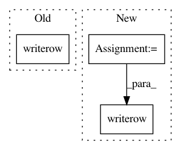

a886baab6b48d976f0b30addde5e588282de072f,util/select_pairs_for_ab.py,,main,#,60
Before Change
with codecs.open(args.out_file, "wb", "UTF-8)") as fh:
writer = csv.writer(fh, delimiter=b",", lineterminator=b"\n")
writer.writerow(("context", "text_a", "text_b", "origin_a", "origin_b"))
for context, inst1, inst2 in data:
if random.random() >= 0.5:
writer.writerow((context, inst2, inst1, args.file2, args.file1))
else:
After Change
else:
data2 = parse_sgm_file(args.file2)
data = create_real_questions(contexts, data1, data2)
header = ("context", "text_a", "text_b", "origin_a", "origin_b")
if len(data) < args.num_samples:
print >> sys.stderr, "Not enough samples, generating only %d." % len(data)
random.shuffle(data)
data = data[:args.num_samples]
with codecs.open(args.out_file, "wb", "UTF-8)") as fh:
writer = csv.writer(fh, delimiter=b",", lineterminator=b"\n")
writer.writerow(header)
for context, inst1, inst2 in data:
if args.test_questions:
if random.random() >= 0.5:
writer.writerow((context, inst2, inst1, args.file1 + "-distorted", args.file1,
In pattern: SUPERPATTERN
Frequency: 3
Non-data size: 3
Instances
Project Name: UFAL-DSG/tgen
Commit Name: a886baab6b48d976f0b30addde5e588282de072f
Time: 2016-05-17
Author: odusek@ufal.mff.cuni.cz
File Name: util/select_pairs_for_ab.py
Class Name:
Method Name: main
Project Name: biocore/scikit-bio
Commit Name: 2b047bb414bbf65a4b0e486321338986b98a24ed
Time: 2014-03-19
Author: jai.rideout@gmail.com
File Name: skbio/maths/stats/distance/base.py
Class Name: CategoricalStatsResults
Method Name: summary
Project Name: Pinafore/qb
Commit Name: b34a1085165933fcffc6d863c2f7274b87bd2b09
Time: 2017-06-01
Author: jordanbg@gmail.com
File Name: ingestion/create_csv.py
Class Name:
Method Name: